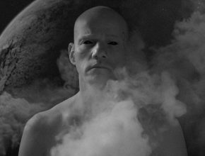
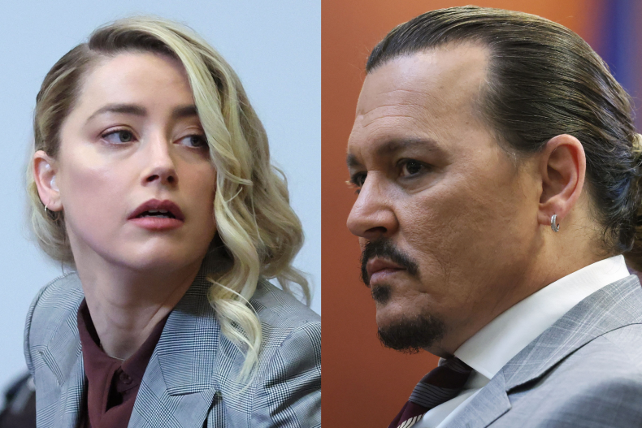

Актуальное


10.11.2020 г.
Ким и Валерия Брейтбурги написали книгу про искусство
Работа над книгой велась более пяти лет, и действенные методики,
описанные в ней, созданные в результате анализа и синтеза идей...

10.11.2020 г.
Юрий Колокольников пытается спасти Землю в клипе "Космические силы"
Премьера клипа "Космические силы" группы "Мумий Троль" состоялась 6
ноября 2020 года.
10.11.2020 г.
BTS получили четыре награды MTV EMA
BTS получили четыре награды MTV EMA 27-я ежегодная церемония
награждения MTV Europe Music Awards состоялась 8 ноября 2020 г.
10.11.2020 г.
Открытие сезона "Ла Скала" отменено
Миланский театр La Scala отменил открытие сезона. Первый спектакль
был назначен на 7 декабря - "Лючия ди Ламмермур"

24.07.2022 г.
Джонни Депп подал встречный иск в ответ на апелляцию Эмбер Хёрд по
делу о клевете.
Хёрд подала жалобу с требованием пересмотреть постановление суда, по
которому ей нужно выплатить Деппу 10,3 млн долларов. А Депп
обжаловал то решение суда, где ему нужно выплатить Эмбер 2 млн
долларов.
24.07.2022 г.
Сочи затопило из-за сильных ливней, которые идут уже второй день.
Из-за большого количества осадков река Бзугу вышла из берегов.
Сильнее всего пострадали Центральный и Хостинский районы. В городе
включили сирены, водные потоки сносят автомобили и запирают в
автобусах людей.